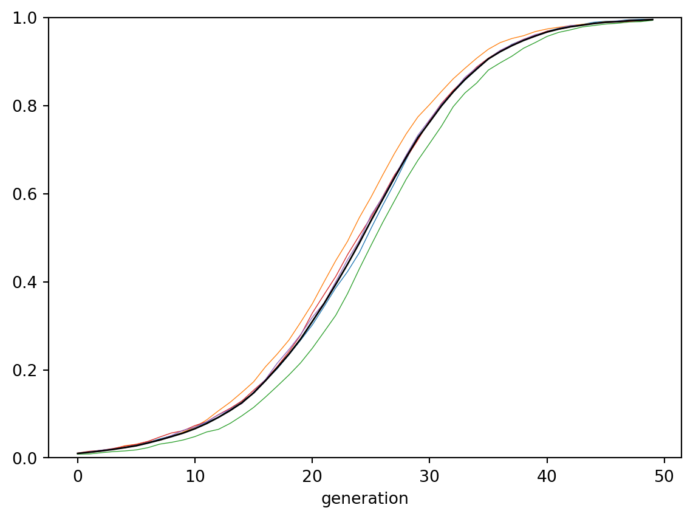
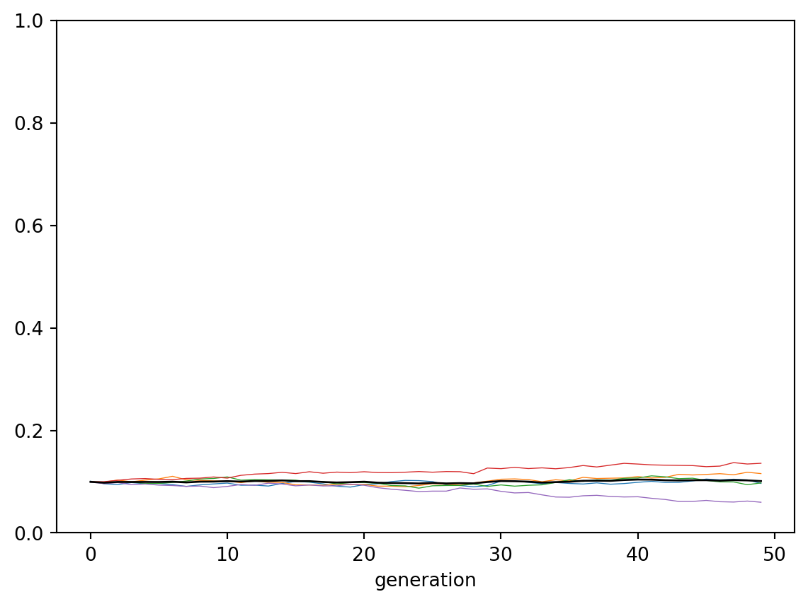

import numpy as np
rng = np.random.default_rng()
import pandas as pd
from tqdm import tqdm12 Vertical and horizontal transmission
Note
This chapter is based on “Chapter 6: Vertical and horizontal transmission” in Acerbi et al. (2022).
12.1 Vertical cultural transmission
def plot_multiple_runs(data_model):
groups = data_model.groupby("run")
for _, g in groups:
g.index = g["generation"]
g["p"].plot(lw=.5, ylim=(0,1))
data_model.groupby("generation")["p"].mean().plot(c="k", lw="1")def vertical_transmission(N, p_0, b, t_max, r_max):
# Create the output DataFrame
output = pd.DataFrame({
"generation" : np.tile(np.arange(t_max), r_max),
"p" : [ np.nan ] * t_max * r_max,
"run" : np.repeat(np.arange(r_max), t_max)
})
for r in range(r_max):
# Create first generation
population = pd.DataFrame({"trait": rng.choice(["A", "B"], size=N, replace=True, p=[p_0, 1 - p_0])})
# Add first generation's p for run r
output.loc[ r * t_max, "p"] = population[ population["trait"] == "A" ].shape[0] / N
# # For each generation
for t in range(1, t_max):
# Copy individuals to previous_population DataFrame
previous_population = population.copy()
# randomly pick mothers and fathers
mother = previous_population["trait"].sample(N, replace=True).reset_index(drop=True)
father = previous_population["trait"].sample(N, replace=True).reset_index(drop=True)
# prepare next generation
population = pd.DataFrame({"trait": [np.nan] * N })
# Both parents are A, thus child adopts A
both_A = (mother == "A") & (father == "A")
# if sum(both_A) > 0:
population.loc[both_A,"trait"] = "A"
# Both parents are A, thus child adopts A
both_B = (mother == "B") & (father == "B")
# if sum(both_B) > 0:
population.loc[both_B,"trait"] = "B"
# If any empty NA slots are present (i.e. one A and one B parent) they adopt A with probability b
remaining = rng.choice(["A", "B"], size=population["trait"].isna().sum(), replace=True, p=[b, 1 - b])
population.loc[population["trait"].isna(),"trait"] = remaining
# Get p and put it into output slot for this generation t and run r
output.loc[r * t_max + t, "p"] = population[ population["trait"] == "A" ].shape[0] / N
return output data_model = vertical_transmission(N=10_000, p_0=0.01, b=0.6,t_max=50, r_max=5)
plot_multiple_runs(data_model)
data_model = vertical_transmission(N=10_000, p_0=0.1, b=0.5,t_max=50, r_max=5)
plot_multiple_runs(data_model)
12.2 Horizontal cultural transmission
Warning
The code below is not yet correct and runs very slowly.
def vertical_horizontal_transmission(N, p_0, b, n, g, t_max, r_max):
# Create the output DataFrame
output = pd.DataFrame({
"generation" : np.tile(np.arange(t_max), r_max),
"p" : [ np.nan ] * t_max * r_max,
"run" : np.repeat(np.arange(r_max), t_max)
})
for r in range(r_max):
# Create first generation
population = pd.DataFrame({"trait": rng.choice(["A", "B"], size=N, replace=True, p=[p_0, 1 - p_0])})
# Add first generation's p for run r
output.loc[ r * t_max, "p"] = population[ population["trait"] == "A" ].shape[0] / N
# For each generation
for t in tqdm(range(t_max)):
### Vertical transmission =========================================================
# Copy individuals to previous_population DataFrame
previous_population = population.copy()
# randomly pick mothers and fathers
mother = previous_population["trait"].sample(N, replace=True).reset_index(drop=True)
father = previous_population["trait"].sample(N, replace=True).reset_index(drop=True)
# prepare next generation
population = pd.DataFrame({"trait": [np.nan] * N })
# Both parents are A, thus child adopts A
both_A = (mother == "A") & (father == "A")
# if sum(both_A) > 0:
population.loc[both_A,"trait"] = "A"
# Both parents are A, thus child adopts A
both_B = (mother == "B") & (father == "B")
# if sum(both_B) > 0:
population.loc[both_B,"trait"] = "B"
# If any empty NA slots are present (i.e. one A and one B parent) they adopt A with probability b
remaining = rng.choice(["A", "B"], size=population["trait"].isna().sum(), replace=True, p=[b, 1 - b])
population.loc[population["trait"].isna(),"trait"] = remaining
# Get p and put it into output slot for this generation t and run r
output.loc[r * t_max + t, "p"] = population[ population["trait"] == "A" ].shape[0] / N
# ### Horizontal transmission =========================================================
# previous_population = population.copy()
# # # N_B = number of Bs
# N_B = previous_population[previous_population["trait"] == "B"].shape[0]
# # if there are B individuals to switch, and n is not zero:
# if (N_B > 0) & (n > 0):
# # for each B individual:
# for i in range(N_B):
# # Pick n demonstrators
# demonstrator = previous_population["trait"].sample(n, replace=True)
# # Get probability g
# copy_ = rng.choice([True, False], n, p=[g, 1 - g], replace=True)
# # if any demonstrators with A are to be copied:
# if sum((demonstrator == "A") & (copy_)) > 0:
# # The B individual switches to A
# population[previous_population["trait"] == "B"].loc[i, "trait"] = "A"
next_population = population.copy()
# # N_B = number of Bs
N_B = next_population[next_population["trait"] == "B"].shape[0]
# if there are B individuals to switch, and n is not zero:
if (N_B > 0) & (n > 0):
# for each B individual:
for i in range(N_B):
# Pick n demonstrators
demonstrator = population["trait"].sample(n, replace=True)
# Get probability g
copy_ = rng.choice([True, False], n, p=[g, 1 - g], replace=True)
# if any demonstrators with A are to be copied:
if sum((demonstrator == "A") & (copy_)) > 0:
# The B individual switches to A
next_population[next_population["trait"] == "B"].loc[i, "trait"] = "A"
# Get p and put it into output slot for this generation t and run r
output.loc[r * t_max + t, "p"] = next_population[ next_population["trait"] == "A" ].shape[0] / N
return outputvertical_horizontal_transmission(N=1000, p_0=0.01, b=0.5, n=5, g=0.1, t_max=10, r_max=1) 0%| | 0/10 [00:00<?, ?it/s]/tmp/ipykernel_118541/3300034538.py:81: SettingWithCopyWarning:
A value is trying to be set on a copy of a slice from a DataFrame
See the caveats in the documentation: https://pandas.pydata.org/pandas-docs/stable/user_guide/indexing.html#returning-a-view-versus-a-copy
next_population[next_population["trait"] == "B"].loc[i, "trait"] = "A" 10%|█ | 1/10 [00:00<00:04, 2.13it/s] 20%|██ | 2/10 [00:00<00:02, 2.70it/s] 30%|███ | 3/10 [00:01<00:02, 2.92it/s] 40%|████ | 4/10 [00:01<00:01, 3.01it/s] 50%|█████ | 5/10 [00:01<00:01, 3.20it/s] 60%|██████ | 6/10 [00:01<00:01, 3.35it/s] 70%|███████ | 7/10 [00:02<00:00, 3.35it/s] 80%|████████ | 8/10 [00:02<00:00, 3.44it/s]/tmp/ipykernel_118541/3300034538.py:81: SettingWithCopyWarning:
A value is trying to be set on a copy of a slice from a DataFrame
See the caveats in the documentation: https://pandas.pydata.org/pandas-docs/stable/user_guide/indexing.html#returning-a-view-versus-a-copy
next_population[next_population["trait"] == "B"].loc[i, "trait"] = "A" 90%|█████████ | 9/10 [00:02<00:00, 3.19it/s]100%|██████████| 10/10 [00:03<00:00, 2.85it/s]100%|██████████| 10/10 [00:03<00:00, 3.02it/s]| generation | p | run | |
|---|---|---|---|
| 0 | 0 | 0.011 | 0 |
| 1 | 1 | 0.012 | 0 |
| 2 | 2 | 0.009 | 0 |
| 3 | 3 | 0.009 | 0 |
| 4 | 4 | 0.011 | 0 |
| 5 | 5 | 0.013 | 0 |
| 6 | 6 | 0.012 | 0 |
| 7 | 7 | 0.014 | 0 |
| 8 | 8 | 0.009 | 0 |
| 9 | 9 | 0.011 | 0 |
data_model = vertical_horizontal_transmission(N=5_000, p_0=0.01, b=0.5, n=5, g=0.1, t_max=50, r_max=2)
plot_multiple_runs(data_model) 0%| | 0/50 [00:00<?, ?it/s]/tmp/ipykernel_118541/3300034538.py:81: SettingWithCopyWarning:
A value is trying to be set on a copy of a slice from a DataFrame
See the caveats in the documentation: https://pandas.pydata.org/pandas-docs/stable/user_guide/indexing.html#returning-a-view-versus-a-copy
next_population[next_population["trait"] == "B"].loc[i, "trait"] = "A" 2%|▏ | 1/50 [00:01<01:22, 1.68s/it]/tmp/ipykernel_118541/3300034538.py:81: SettingWithCopyWarning:
A value is trying to be set on a copy of a slice from a DataFrame
See the caveats in the documentation: https://pandas.pydata.org/pandas-docs/stable/user_guide/indexing.html#returning-a-view-versus-a-copy
next_population[next_population["trait"] == "B"].loc[i, "trait"] = "A" 4%|▍ | 2/50 [00:03<01:17, 1.61s/it] 6%|▌ | 3/50 [00:05<01:24, 1.81s/it] 8%|▊ | 4/50 [00:07<01:22, 1.79s/it] 10%|█ | 5/50 [00:08<01:17, 1.73s/it]/tmp/ipykernel_118541/3300034538.py:81: SettingWithCopyWarning:
A value is trying to be set on a copy of a slice from a DataFrame
See the caveats in the documentation: https://pandas.pydata.org/pandas-docs/stable/user_guide/indexing.html#returning-a-view-versus-a-copy
next_population[next_population["trait"] == "B"].loc[i, "trait"] = "A" 12%|█▏ | 6/50 [00:10<01:11, 1.61s/it] 14%|█▍ | 7/50 [00:11<01:06, 1.54s/it] 16%|█▌ | 8/50 [00:12<01:02, 1.48s/it] 18%|█▊ | 9/50 [00:14<00:58, 1.43s/it] 20%|██ | 10/50 [00:15<00:56, 1.41s/it]/tmp/ipykernel_118541/3300034538.py:81: SettingWithCopyWarning:
A value is trying to be set on a copy of a slice from a DataFrame
See the caveats in the documentation: https://pandas.pydata.org/pandas-docs/stable/user_guide/indexing.html#returning-a-view-versus-a-copy
next_population[next_population["trait"] == "B"].loc[i, "trait"] = "A"/tmp/ipykernel_118541/3300034538.py:81: SettingWithCopyWarning:
A value is trying to be set on a copy of a slice from a DataFrame
See the caveats in the documentation: https://pandas.pydata.org/pandas-docs/stable/user_guide/indexing.html#returning-a-view-versus-a-copy
next_population[next_population["trait"] == "B"].loc[i, "trait"] = "A" 22%|██▏ | 11/50 [00:16<00:53, 1.38s/it] 24%|██▍ | 12/50 [00:18<00:52, 1.37s/it] 26%|██▌ | 13/50 [00:19<00:50, 1.38s/it] 28%|██▊ | 14/50 [00:20<00:49, 1.37s/it] 30%|███ | 15/50 [00:22<00:47, 1.35s/it] 32%|███▏ | 16/50 [00:23<00:45, 1.34s/it] 34%|███▍ | 17/50 [00:24<00:43, 1.31s/it] 36%|███▌ | 18/50 [00:25<00:41, 1.29s/it] 38%|███▊ | 19/50 [00:27<00:40, 1.30s/it] 40%|████ | 20/50 [00:28<00:38, 1.29s/it] 42%|████▏ | 21/50 [00:29<00:38, 1.31s/it] 44%|████▍ | 22/50 [00:31<00:36, 1.31s/it] 46%|████▌ | 23/50 [00:32<00:35, 1.30s/it] 48%|████▊ | 24/50 [00:33<00:33, 1.29s/it] 50%|█████ | 25/50 [00:35<00:31, 1.27s/it] 52%|█████▏ | 26/50 [00:36<00:30, 1.25s/it] 54%|█████▍ | 27/50 [00:37<00:28, 1.25s/it] 56%|█████▌ | 28/50 [00:38<00:27, 1.24s/it] 58%|█████▊ | 29/50 [00:40<00:26, 1.28s/it] 60%|██████ | 30/50 [00:41<00:25, 1.29s/it] 62%|██████▏ | 31/50 [00:42<00:25, 1.34s/it] 64%|██████▍ | 32/50 [00:44<00:25, 1.40s/it] 66%|██████▌ | 33/50 [00:45<00:23, 1.40s/it] 68%|██████▊ | 34/50 [00:47<00:23, 1.47s/it] 70%|███████ | 35/50 [00:49<00:23, 1.54s/it] 72%|███████▏ | 36/50 [00:50<00:21, 1.57s/it] 74%|███████▍ | 37/50 [00:52<00:19, 1.50s/it] 76%|███████▌ | 38/50 [00:53<00:17, 1.49s/it] 78%|███████▊ | 39/50 [00:54<00:15, 1.40s/it] 80%|████████ | 40/50 [00:56<00:13, 1.40s/it] 82%|████████▏ | 41/50 [00:57<00:12, 1.33s/it] 84%|████████▍ | 42/50 [00:58<00:10, 1.29s/it] 86%|████████▌ | 43/50 [01:00<00:09, 1.37s/it] 88%|████████▊ | 44/50 [01:01<00:08, 1.34s/it] 90%|█████████ | 45/50 [01:02<00:06, 1.30s/it] 92%|█████████▏| 46/50 [01:03<00:05, 1.29s/it] 94%|█████████▍| 47/50 [01:05<00:04, 1.40s/it] 96%|█████████▌| 48/50 [01:06<00:02, 1.34s/it] 98%|█████████▊| 49/50 [01:07<00:01, 1.30s/it]100%|██████████| 50/50 [01:09<00:00, 1.26s/it]100%|██████████| 50/50 [01:09<00:00, 1.38s/it] 0%| | 0/50 [00:00<?, ?it/s] 2%|▏ | 1/50 [00:01<01:12, 1.49s/it]/tmp/ipykernel_118541/3300034538.py:81: SettingWithCopyWarning:
A value is trying to be set on a copy of a slice from a DataFrame
See the caveats in the documentation: https://pandas.pydata.org/pandas-docs/stable/user_guide/indexing.html#returning-a-view-versus-a-copy
next_population[next_population["trait"] == "B"].loc[i, "trait"] = "A" 4%|▍ | 2/50 [00:02<01:08, 1.42s/it] 6%|▌ | 3/50 [00:04<01:09, 1.48s/it] 8%|▊ | 4/50 [00:05<01:09, 1.50s/it] 10%|█ | 5/50 [00:07<01:06, 1.47s/it] 12%|█▏ | 6/50 [00:08<01:03, 1.45s/it] 14%|█▍ | 7/50 [00:10<01:00, 1.41s/it] 16%|█▌ | 8/50 [00:11<01:00, 1.44s/it]/tmp/ipykernel_118541/3300034538.py:81: SettingWithCopyWarning:
A value is trying to be set on a copy of a slice from a DataFrame
See the caveats in the documentation: https://pandas.pydata.org/pandas-docs/stable/user_guide/indexing.html#returning-a-view-versus-a-copy
next_population[next_population["trait"] == "B"].loc[i, "trait"] = "A"
18%|█▊ | 9/50 [00:12<00:58, 1.42s/it] 20%|██ | 10/50 [00:14<00:56, 1.41s/it] 22%|██▏ | 11/50 [00:15<00:56, 1.46s/it] 24%|██▍ | 12/50 [00:17<00:56, 1.49s/it] 26%|██▌ | 13/50 [00:18<00:53, 1.46s/it]/tmp/ipykernel_118541/3300034538.py:81: SettingWithCopyWarning:
A value is trying to be set on a copy of a slice from a DataFrame
See the caveats in the documentation: https://pandas.pydata.org/pandas-docs/stable/user_guide/indexing.html#returning-a-view-versus-a-copy
next_population[next_population["trait"] == "B"].loc[i, "trait"] = "A" 28%|██▊ | 14/50 [00:20<00:52, 1.46s/it] 30%|███ | 15/50 [00:21<00:49, 1.43s/it]/tmp/ipykernel_118541/3300034538.py:81: SettingWithCopyWarning:
A value is trying to be set on a copy of a slice from a DataFrame
See the caveats in the documentation: https://pandas.pydata.org/pandas-docs/stable/user_guide/indexing.html#returning-a-view-versus-a-copy
next_population[next_population["trait"] == "B"].loc[i, "trait"] = "A"
32%|███▏ | 16/50 [00:23<00:47, 1.41s/it]/tmp/ipykernel_118541/3300034538.py:81: SettingWithCopyWarning:
A value is trying to be set on a copy of a slice from a DataFrame
See the caveats in the documentation: https://pandas.pydata.org/pandas-docs/stable/user_guide/indexing.html#returning-a-view-versus-a-copy
next_population[next_population["trait"] == "B"].loc[i, "trait"] = "A" 34%|███▍ | 17/50 [00:24<00:45, 1.38s/it] 36%|███▌ | 18/50 [00:25<00:45, 1.41s/it] 38%|███▊ | 19/50 [00:27<00:43, 1.40s/it] 40%|████ | 20/50 [00:28<00:42, 1.42s/it] 42%|████▏ | 21/50 [00:30<00:41, 1.42s/it] 44%|████▍ | 22/50 [00:31<00:40, 1.45s/it] 46%|████▌ | 23/50 [00:33<00:42, 1.57s/it] 48%|████▊ | 24/50 [00:35<00:40, 1.55s/it]/tmp/ipykernel_118541/3300034538.py:81: SettingWithCopyWarning:
A value is trying to be set on a copy of a slice from a DataFrame
See the caveats in the documentation: https://pandas.pydata.org/pandas-docs/stable/user_guide/indexing.html#returning-a-view-versus-a-copy
next_population[next_population["trait"] == "B"].loc[i, "trait"] = "A" 50%|█████ | 25/50 [00:36<00:37, 1.50s/it]/tmp/ipykernel_118541/3300034538.py:81: SettingWithCopyWarning:
A value is trying to be set on a copy of a slice from a DataFrame
See the caveats in the documentation: https://pandas.pydata.org/pandas-docs/stable/user_guide/indexing.html#returning-a-view-versus-a-copy
next_population[next_population["trait"] == "B"].loc[i, "trait"] = "A" 52%|█████▏ | 26/50 [00:37<00:36, 1.51s/it] 54%|█████▍ | 27/50 [00:39<00:34, 1.51s/it] 56%|█████▌ | 28/50 [00:40<00:31, 1.43s/it] 58%|█████▊ | 29/50 [00:42<00:29, 1.42s/it] 60%|██████ | 30/50 [00:43<00:27, 1.38s/it] 62%|██████▏ | 31/50 [00:44<00:26, 1.39s/it]/tmp/ipykernel_118541/3300034538.py:81: SettingWithCopyWarning:
A value is trying to be set on a copy of a slice from a DataFrame
See the caveats in the documentation: https://pandas.pydata.org/pandas-docs/stable/user_guide/indexing.html#returning-a-view-versus-a-copy
next_population[next_population["trait"] == "B"].loc[i, "trait"] = "A" 64%|██████▍ | 32/50 [00:46<00:25, 1.40s/it]/tmp/ipykernel_118541/3300034538.py:81: SettingWithCopyWarning:
A value is trying to be set on a copy of a slice from a DataFrame
See the caveats in the documentation: https://pandas.pydata.org/pandas-docs/stable/user_guide/indexing.html#returning-a-view-versus-a-copy
next_population[next_population["trait"] == "B"].loc[i, "trait"] = "A"
/tmp/ipykernel_118541/3300034538.py:81: SettingWithCopyWarning:
A value is trying to be set on a copy of a slice from a DataFrame
See the caveats in the documentation: https://pandas.pydata.org/pandas-docs/stable/user_guide/indexing.html#returning-a-view-versus-a-copy
next_population[next_population["trait"] == "B"].loc[i, "trait"] = "A" 66%|██████▌ | 33/50 [00:47<00:23, 1.39s/it] 68%|██████▊ | 34/50 [00:48<00:22, 1.38s/it] 70%|███████ | 35/50 [00:50<00:22, 1.53s/it] 72%|███████▏ | 36/50 [00:52<00:21, 1.54s/it] 74%|███████▍ | 37/50 [00:54<00:20, 1.59s/it] 76%|███████▌ | 38/50 [00:55<00:19, 1.63s/it] 78%|███████▊ | 39/50 [00:57<00:17, 1.58s/it] 80%|████████ | 40/50 [00:58<00:15, 1.52s/it] 82%|████████▏ | 41/50 [01:00<00:13, 1.50s/it] 84%|████████▍ | 42/50 [01:01<00:11, 1.43s/it] 86%|████████▌ | 43/50 [01:02<00:09, 1.37s/it] 88%|████████▊ | 44/50 [01:03<00:07, 1.33s/it] 90%|█████████ | 45/50 [01:04<00:06, 1.29s/it] 92%|█████████▏| 46/50 [01:06<00:05, 1.26s/it] 94%|█████████▍| 47/50 [01:07<00:03, 1.26s/it] 96%|█████████▌| 48/50 [01:08<00:02, 1.26s/it] 98%|█████████▊| 49/50 [01:09<00:01, 1.26s/it]100%|██████████| 50/50 [01:11<00:00, 1.25s/it]100%|██████████| 50/50 [01:11<00:00, 1.42s/it]